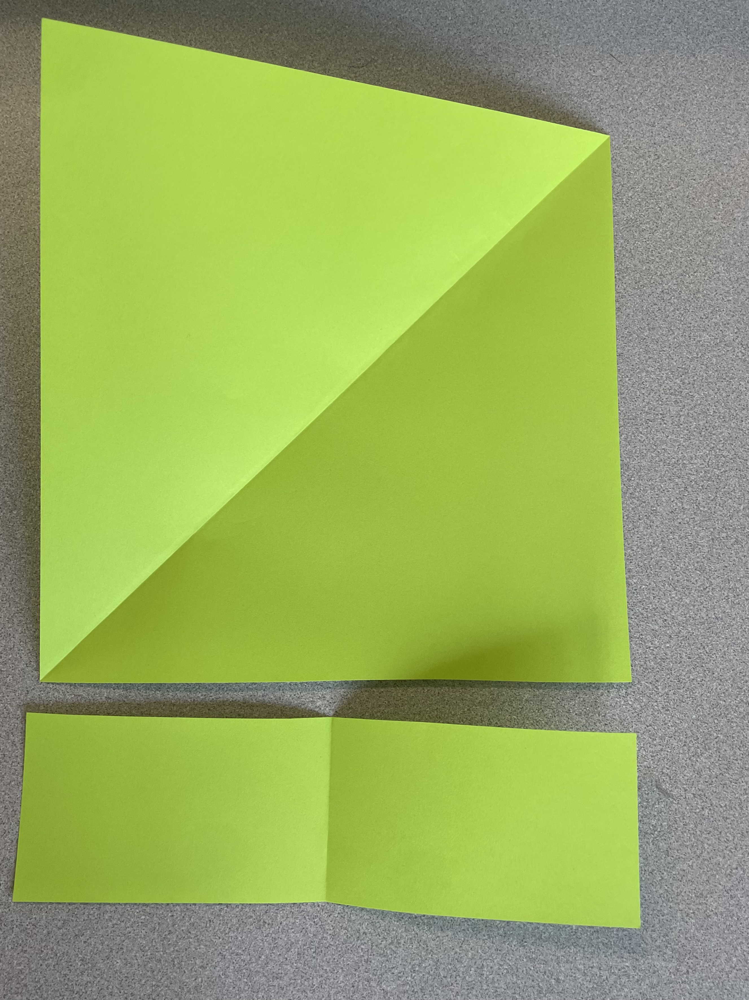
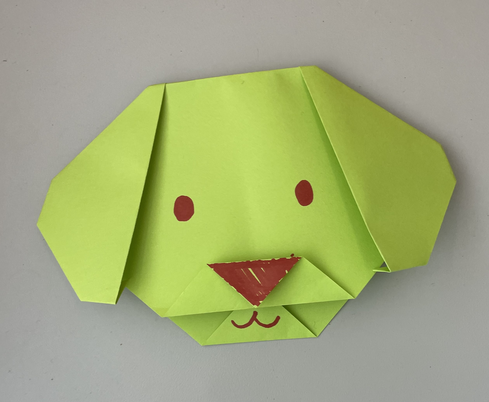
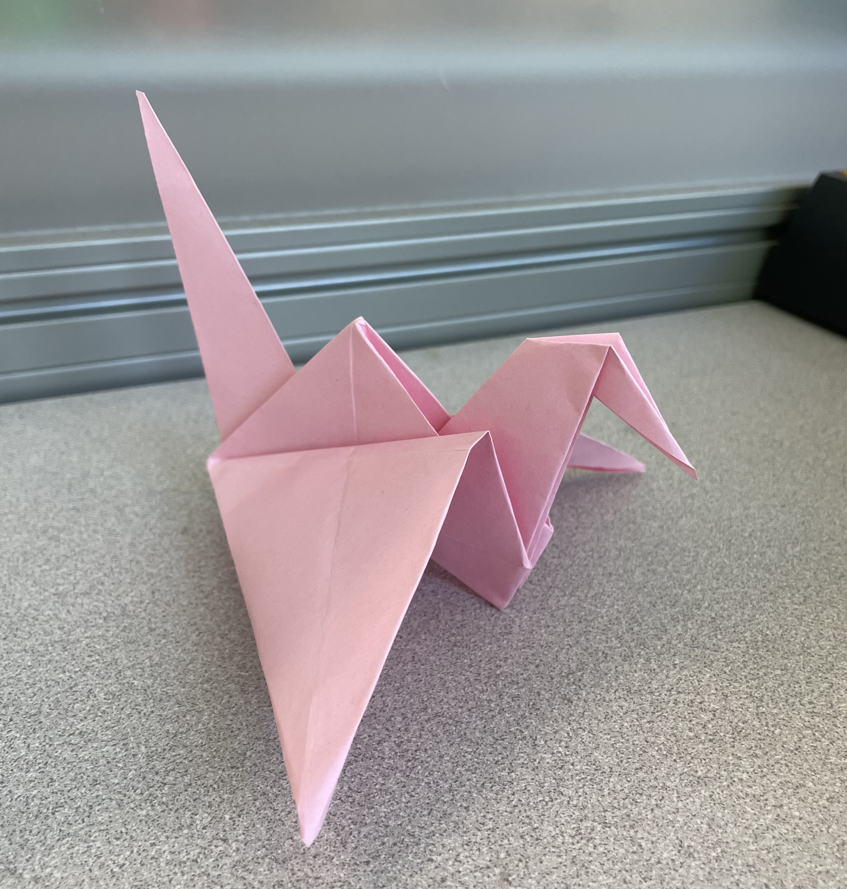
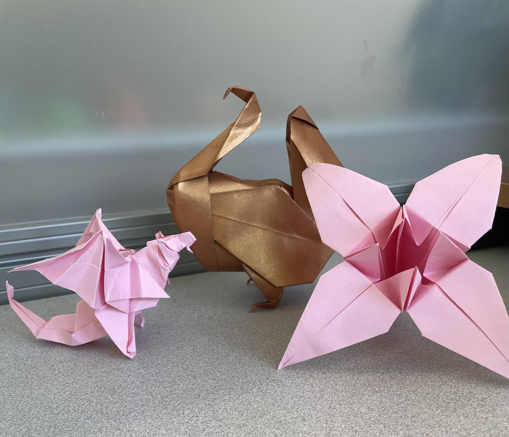

Origami is a craft that requires two things: paper and patience. The core essence of origami lies in folding the paper in different ways to create a piece of artwork. I've loved origami since fifth grade, ever since a guest speaker taught us how to make a paper crane. Little did I know, that catapulted me into the world of origami — while I have yet to explore the depth of complex origami, there are many pieces that I have made along the years that I have loved making with friends and family. While these crafts have a particular age range as a recommendation, it is by no means a requirement — I have made all of these crafts at varying times, and they're always a wonder when you put them on display.
Origami paper can be expensive, but there are many alternatives, such as construction paper (suitable for the simpler crafts), printer paper (more versatile), and even parchment paper. I personally used printer paper, folded into a triangle, and then cut into a square (demonstrated below) for origami that requires a square to start with. As a child, I couldn't afford to ask for expensive imported paper (although many craft stores should carry basic origami paper), so I made do with what we had at home.
Different origami instructions may require different starting paper shapes or sizes — harder pieces tend to require larger paper, at least to first start off with. For all the pieces demonstrated in this article, size A4 printer paper cut into a square will do the trick. All pieces will be made with a square-cut size A4 paper. Certain pieces may utilize two colors, if the paper was double sided (two different colors on each side), but that usually lies in origami paper. For the crafts below, most were all folded using A4 paper, cut into a square.

For younger children, origami crafts which include coloring and adding details to the piece may be great for adding multiple levels of creativity. Some of them are just folding animal heads, such as a cat or a dog, and coloring in the faces.
When it comes to making art together, families or friends can make separate pieces or work together to make a single piece — spending time together to make something new. I believe children will enjoy coloring the pieces however they'd like, adding in cute little designs for the animals, such as a spotted puppy or a purple cat.

For older children, beginning with crafts that teach more of the important origami terms can help with progressing to harder crafts. These folds may include learning how to do reverse folds, basic sinks, and accordion folds. Some of these crafts include the water balloon (water bomb base), the paper crane (crane base), or a jumping frog (frog base). One of the most well-known traditional crafts would tend to be the paper crane, of which there are many stories written around it. The story of a thousand paper cranes to wish someone well is commonplace, and people still follow the story with hope — folding a thousand cranes as a gift.

Moving onto some origami that has a bit more complexity, I love folding this traditional lily, dragon, and turkey, with their respective creators. Origami can be used as festive decorations, handmade additions to presents, or as a gift itself.

I tend to find my instructions online, looking for diagrams in particular. Some origami pieces use crease patterns, which require additional practice and training. Origami can also have YouTube tutorials, or tutorials on other social media websites, for more visual clarity in instructions. Two of the websites that I enjoy using would be:
origami-resource-center.com/free-origami-instructions/ — for origami among several different levels of complexities, primarily origami diagrams.
jonakashima.com.br — for intermediate level origami, complete with video tutorials.
As for specific models, I look on Gilad's origami or scour the internet, in order to find the exact book or magazine you can find a diagram in. For instance, Tanteidan magazines and conventions have a variety of different origami diagrams, of which have varying skill levels. I have made a few pieces from Tanteidan's diagrams, quite a few from different popular origami artists (such as Satoshi Kamiya), and found smaller origami magazines along the way.
Origami is a multi-faceted complex art, but the origami journey doesn't have to delve into the complexities. Origami artists mathematically determine how to create a piece from nothing but a sheet of paper, designing a new representation of the world. For example, a panda has a lot of artistic representations of a panda, with some realistic, and some more abstract. Depending on your skill level and/or what sort of panda you're looking for, you'll end up choosing a design based on your criteria. However, the most important part is that you have this opportunity to pick among the multitudes of designs.
Some pieces have a renowned level of prestige, whether it is by difficulty or skill demonstration, such as the Ancient Dragon by Satoshi Kamiya — which is sometimes used to determine if a person has reached a certain benchmark of difficulty. As a craft, origami is flexible enough to accommodate the wants of the artists who pursue it. Even though origami can reach levels of complexity that only masters of the craft can make, it is still accessible as a craft for most people.
For some beginner origami books, consider checking out your local library. Chicago's libraries hold over three hundred books about origami (some of which may not have diagrams to follow, as there may be books that explore origami as a subject). You can check out the Chicago Public Library catalogue. As mentioned earlier, there are origami encyclopedias or catalogues (I personally like looking through giladorigami.com), where you may be able to find specific diagrams — pandas, for example, have an insane amount of models.
Please feel free to enjoy origami at your own leisure. As a starting point, origami is best enjoyed as an activity or hobby.